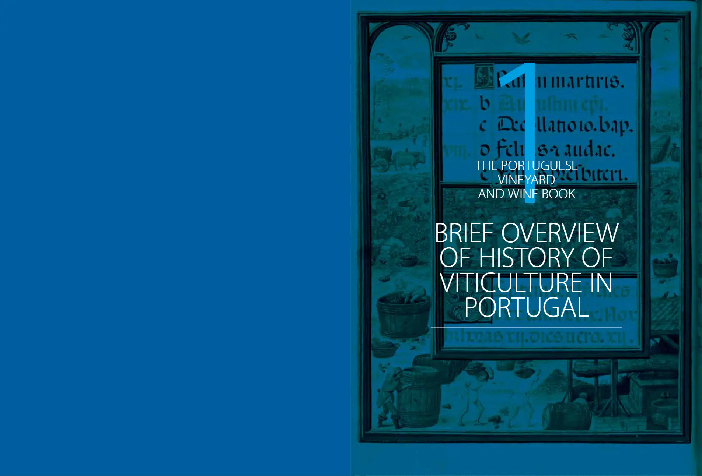
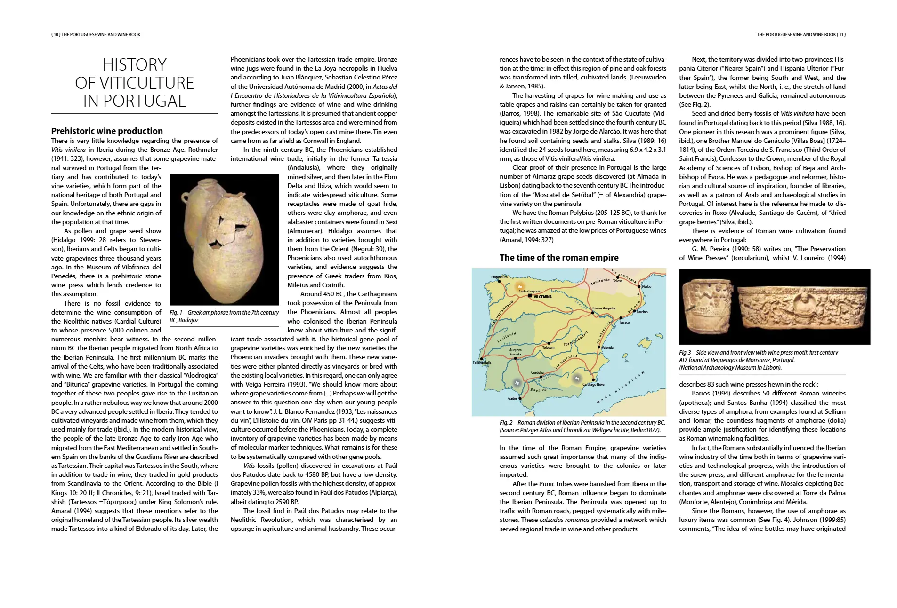
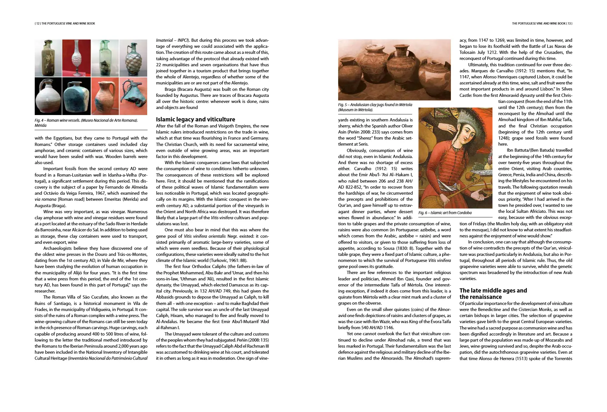
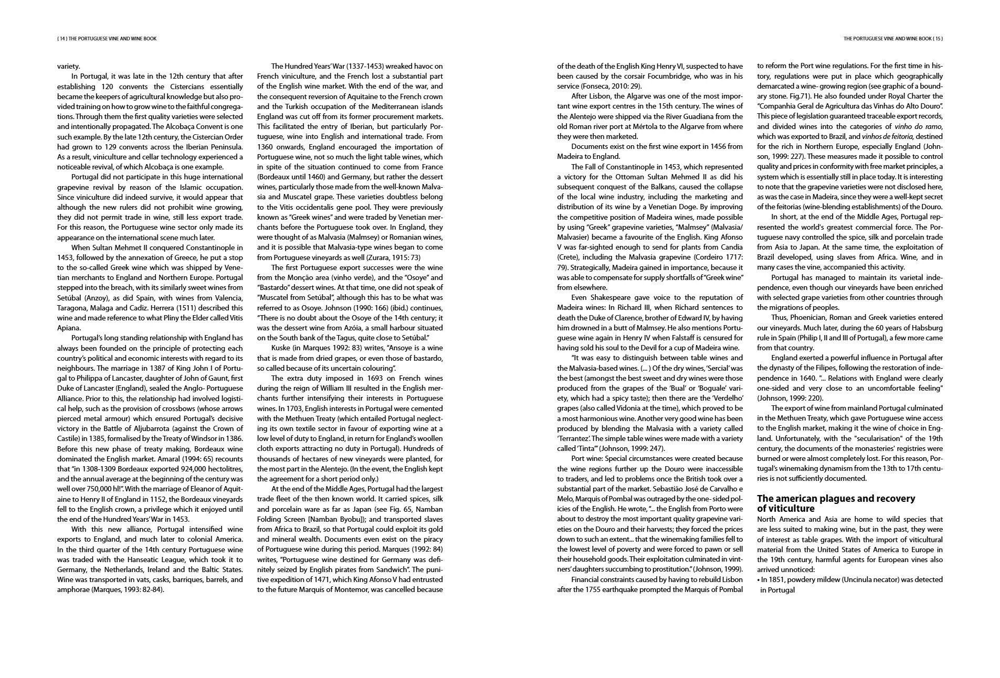
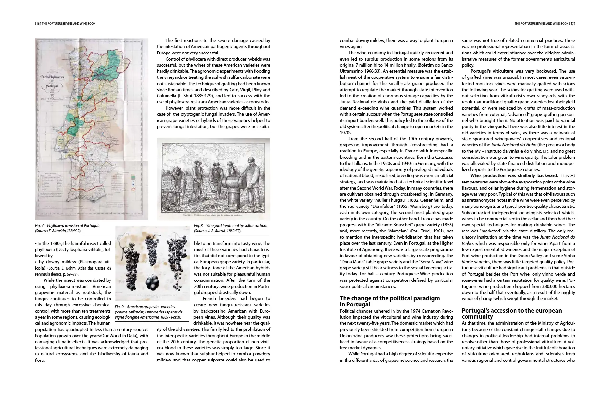
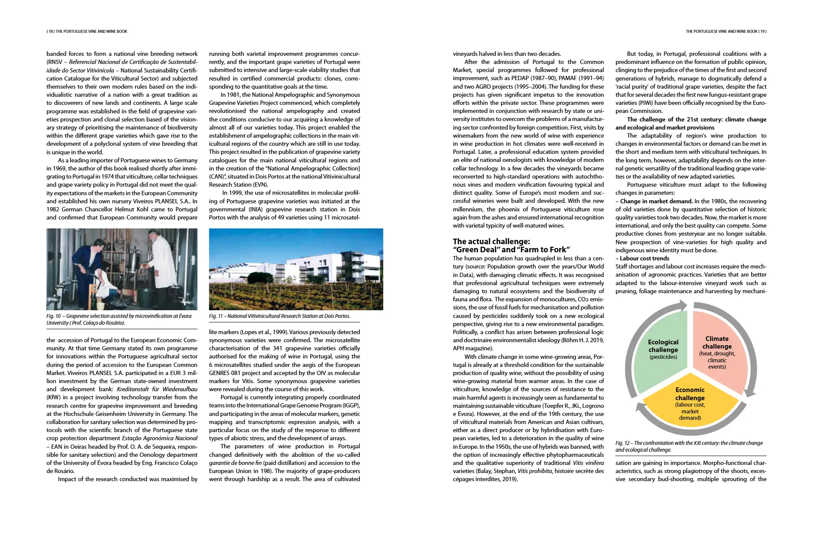
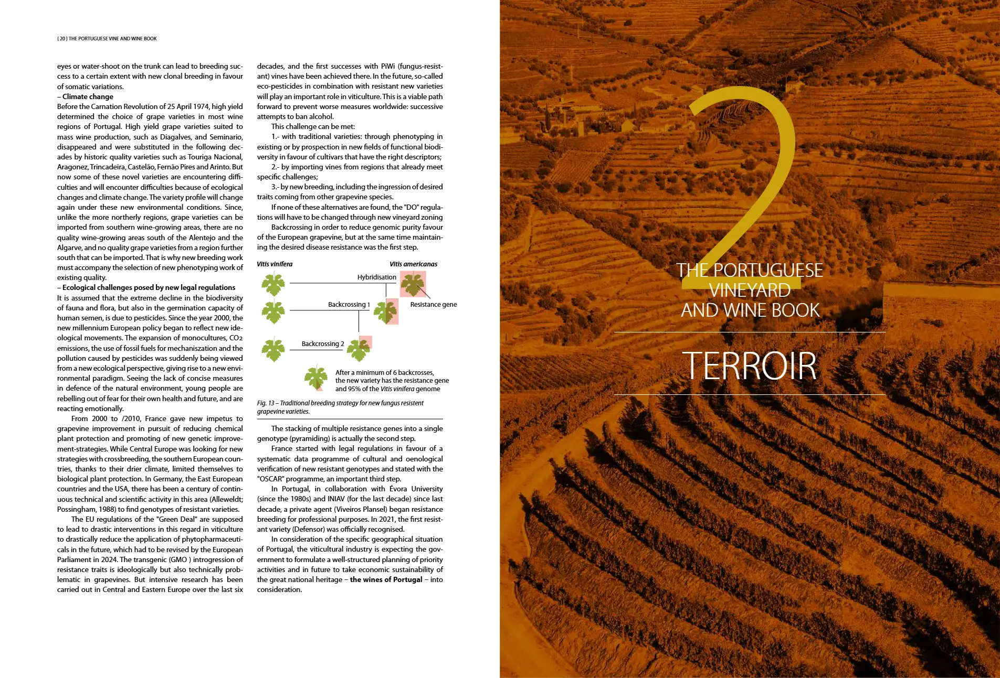

Chapter 1 · The Portuguese Vineyard and Wine Book
Brief overview of the history of viticulture in Portugal

Text · Pages 8–9
1THE PORTUGUESE VINEYARD AND WINE BOOK BRIEF OVERVIEW OF HISTORY OF VITICULTURE IN PORTUGAL

Text · Pages 10–11
HISTORY
Phoenicians took over the Tartessian trade empire. Bronze wine jugs were found in the La Joya necropolis in Huelva
OF VITICULTURE
and according to Juan Blánquez, Sebastian Celestino Pérez of the Universidad Autónoma de Madrid (2000, in Actas del
IN PORTUGAL
I Encuentro de Historiadores de la Vitivinicultura Española), further findings are evidence of wine and wine drinking
amongst the Tartessians. It is presumed that ancient copper
Prehistoric wine production
deposits existed in the Tartessos area and were mined from the predecessors of today’s open cast mine there. Tin even
There is very little knowledge regarding the presence of came from as far afield as Cornwall in England.
Vitis vinifera in Iberia during the Bronze Age. Rothmaler
In the ninth century BC, the Phoenicians established
(1941: 323), however, assumes that some grapevine mate- international wine trade, initially in the former Tartessia
rial survived in Portugal from the Ter-
(Andalusia), where they originally
tiary and has contributed to today’s
mined silver, and then later in the Ebro
vine varieties, which form part of the
Delta and Ibiza, which would seem to
national heritage of both Portugal and
indicate widespread viticulture. Some
Spain. Unfortunately, there are gaps in
receptacles were made of goat hide,
our knowledge on the ethnic origin of
others were clay amphorae, and even
the population at that time.
alabaster containers were found in Sexi
As pollen and grape seed show
(Almuñécar). Hildalgo assumes that
(Hidalgo 1999: 28 refers to Steven-
in addition to varieties brought with
son), Iberians and Celts began to culti-
them from the Orient (Negrul: 30), the
vate grapevines three thousand years
Phoenicians also used autochthonous
ago. In the Museum of Vilafranca del
varieties, and evidence suggests the
Penedès, there is a prehistoric stone
presence of Greek traders from Kios,
wine press which lends credence to
Miletus and Corinth.
this assumption.
Around 450 BC, the Carthaginians
There is no fossil evidence to
took possession of the Peninsula from
determine the wine consumption of Fig. 1 – Greek amphorae from the 7th century the Phoenicians. Almost all peoples
the Neolithic natives (Cardial Culture) BC, Badajoz
who colonised the Iberian Peninsula
to whose presence 5,000 dolmen and
knew about viticulture and the signif-
numerous menhirs bear witness. In the second millen- icant trade associated with it. The historical gene pool of
nium BC the Iberian people migrated from North Africa to grapevine varieties was enriched by the new varieties the
the Iberian Peninsula. The first millennium BC marks the Phoenician invaders brought with them. These new varie-
arrival of the Celts, who have been traditionally associated ties were either planted directly as vineyards or bred with
with wine. We are familiar with their classical “Alodrogica” the existing local varieties. In this regard, one can only agree
and “Biturica” grapevine varieties. In Portugal the coming with Veiga Ferreira (1993), “We should know more about
together of these two peoples gave rise to the Lusitanian where grape varieties come from (...) Perhaps we will get the
people. In a rather nebulous way we know that around 2000 answer to this question one day when our young people
BC a very advanced people settled in Iberia. They tended to want to know”. J. L. Blanco Fernandez (1933, “Les naissances
cultivated vineyards and made wine from them, which they du vin”, L‘Histoire du vin. OIV Paris pp 31-44.) suggests viti-
used mainly for trade (ibid.). In the modern historical view, culture occurred before the Phoenicians. Today, a complete
the people of the late Bronze Age to early Iron Age who inventory of grapevine varieties has been made by means
migrated from the East Mediterranean and settled in South- of molecular marker techniques. What remains is for these
ern Spain on the banks of the Guadiana River are described to be systematically compared with other gene pools.
as Tartessian. Their capital was Tartessos in the South, where
Vitis fossils (pollen) discovered in excavations at Paúl
in addition to trade in wine, they traded in gold products dos Patudos date back to 4580 BP, but have a low density.
from Scandinavia to the Orient. According to the Bible (I Grapevine pollen fossils with the highest density, of approx-
Kings 10: 20 ff; II Chronicles, 9: 21), Israel traded with Tar- imately 33%, were also found in Paúl dos Patudos (Alpiarça),
shish (Tartessos =Τάρτησσος) under King Solomon’s rule. albeit dating to 2590 BP.
Amaral (1994) suggests that these mentions refer to the
The fossil find in Paúl dos Patudos may relate to the
original homeland of the Tartessian people. Its silver wealth Neolithic Revolution, which was characterised by an
made Tartessos into a kind of Eldorado of its day. Later, the upsurge in agriculture and animal husbandry. These occur-
rences have to be seen in the context of the state of cultivation at the time; in effect this region of pine and oak forests was transformed into tilled, cultivated lands. (Leeuwarden & Jansen, 1985). The harvesting of grapes for wine making and use as table grapes and raisins can certainly be taken for granted (Barros, 1998). The remarkable site of São Cucufate (Vidigueira) which had been settled since the fourth century BC was excavated in 1982 by Jorge de Alarcão. It was here that he found soil containing seeds and stalks. Silva (1989: 16) identified the 24 seeds found here, measuring 6.9 x 4.2 x 3.1 mm, as those of Vitis viniferaVitis vinifera. Clear proof of their presence in Portugal is the large number of Almaraz grape seeds discovered (at Almada in Lisbon) dating back to the seventh century BC The introduction of the “Moscatel de Setúbal” (= of Alexandria) grapevine variety on the peninsula We have the Roman Polybius (205‑125 BC), to thank for the first written documents on pre‑Roman viticulture in Portugal; he was amazed at the low prices of Portuguese wines (Amaral, 1994: 327)
The time of the roman empire
V I A LUSITAN sis VIA HERCULEA O MITIA
Brigantium
ORUM
Au Castra Legionis VII GEMINA
VIA
Aquitania
AQ Tolosa
U
I
T
A
N
I
A
Narbo
Iberus
Caesar Augusta
D V I A Barcino
Tarraco
Felicitas Iulia
L
u
si T
tani agu
a s
Augusta Emerita
Ag Gades
Toletum
Ta r r a c o n e n
Valentia
Corduba Baetis Baetica
HERCULEA VIA Ag Carthago Nova E R A M
M U C I R E B I H
Fig. 2 – Roman division of Iberian Peninsula in the second century BC. (Source: Putzger Atlas und Chronik zur Weltgeschichte, Berlin:1877). In the time of the Roman Empire, grapevine varieties assumed such great importance that many of the indigenous varieties were brought to the colonies or later imported. After the Punic tribes were banished from Iberia in the second century BC, Roman influence began to dominate the Iberian Peninsula. The Peninsula was opened up to traffic with Roman roads, pegged systematically with milestones. These calzadas romanas provided a network which served regional trade in wine and other products
Next, the territory was divided into two provinces: Hispania Citerior (“Nearer Spain”) and Hispania Ulterior (“Further Spain”), the former being South and West, and the latter being East, whilst the North, i. e., the stretch of land between the Pyrenees and Galicia, remained autonomous (See Fig. 2). Seed and dried berry fossils of Vitis vinifera have been found in Portugal dating back to this period (Silva 1988, 16). One pioneer in this research was a prominent figure (Silva, ibid.), one Brother Manuel do Cenáculo [Villas Boas] (1724– 1814), of the Ordem Terceira de S. Francisco (Third Order of Saint Francis), Confessor to the Crown, member of the Royal Academy of Sciences of Lisbon, Bishop of Beja and Archbishop of Évora. He was a pedagogue and reformer, historian and cultural source of inspiration, founder of libraries, as well as a patron of Arab and archaeological studies in Portugal. Of interest here is the reference he made to discoveries in Roxo (Alvalade, Santiago do Cacém), of “dried grape berries” (Silva, ibid.). There is evidence of Roman wine cultivation found everywhere in Portugal: G. M. Pereira (1990: 58) writes on, “The Preservation of Wine Presses” (torcularium), whilst V. Loureiro (1994) Fig.3 – Side view and front view with wine press motif, first century AD, found at Reguengos de Monsaraz, Portugal. (National Archaeology Museum in Lisbon). describes 83 such wine presses hewn in the rock); Barros (1994) describes 50 different Roman wineries (apotheca); and Santos Banha (1994) classified the most diverse types of amphora, from examples found at Sellium and Tomar; the countless fragments of amphorae (dolia) provide ample justification for identifying these locations as Roman winemaking facilities. In fact, the Romans substantially influenced the Iberian wine industry of the time both in terms of grapevine varieties and technological progress, with the introduction of the screw press, and different amphorae for the fermentation, transport and storage of wine. Mosaics depicting Bacchantes and amphorae were discovered at Torre da Palma (Monforte, Alentejo), Conímbriga and Mérida. Since the Romans, however, the use of amphorae as luxury items was common (See Fig. 4). Johnson (1999:85) comments, “The idea of wine bottles may have originated

Text · Pages 12–13
Fig. 4 – Roman wine vessels. (Museo Nacional de Arte Romana). Mérida with the Egyptians, but they came to Portugal with the Romans.” Other storage containers used included clay amphorae, and ceramic containers of various sizes, which would have been sealed with wax. Wooden barrels were also used. Important fossils from the second century AD were found in a Roman‑Lusitanian well in Idanha‑a‑Velha (Portugal), a significant settlement during this period. This discovery is the subject of a paper by Fernando de Almeida and Octávio da Veiga Ferreira, 1967, which examined the via romana [Roman road] between Emeritas (Merida) and Augusta (Braga). Wine was very important, as was vinegar. Numerous clay amphorae with wine and vinegar residues were found at a port located at the estuary of the Sado River in Herdade da Barrosinha, near Alcácer do Sal. In addition to being used as storage, these clay containers were used to transport, and even export, wine Archaeologists believe they have discovered one of the oldest wine presses in the Douro and Trás-os-Montes, dating from the 1st century AD, in Vale de Mir, where they have been studying the evolution of human occupation in the municipality of Alijó for four years. "It is the first time that a wine press from this period, the end of the 1st century AD, has been found in this part of Portugal," says the researcher. The Roman Villa of São Cucufate, also known as the Ruins of Santiago, is a historical monument in Vila de Frades, in the municipality of Vidigueira, in Portugal. It consists of the ruins of a Roman complex with a wine press. The wine-growing culture of the Romans can still be seen today in the rich presence of Roman carvings. Huge carvings, each capable of producing around 400 to 500 litres of wine, following to the letter the traditional method introduced by the Romans to the Iberian Peninsula around 2,000 years ago have been included in the National Inventory of Intangible Cultural Heritage (Inventário Nacional do Património Cultural
Imaterial – INPCI). But during this process we took advantage of everything we could associated with the application. The creation of this route came about as a result of this, taking advantage of the protocol that already existed with 22 municipalities and seven organisations that have thus joined together in a tourism product that brings together the whole of Alentejo, regardless of whether some of the municipalities are or are not part of the Alentejo. Braga (Bracara Augusta) was built on the Roman city founded by Augustus. There are traces of Bracara Augusta all over the historic centre: whenever work is done, ruins and objects are found Islamic legacy and viticulture After the fall of the Roman and Visigoth Empires, the new Islamic rulers introduced restrictions on the trade in wine, which at that time was flourishing in France and Germany. The Christian Church, with its need for sacramental wine, even outside of wine growing areas, was an important factor in this development. With the Islamic conquerors came laws that subjected the consumption of wine to conditions hitherto unknown. The consequences of these restrictions will be explored here. First, it should be mentioned that the ramifications of these political waves of Islamic fundamentalism were less noticeable in Portugal, which was located geographically on its margins. With the Islamic conquest in the seventh century AD, a substantial portion of the vineyards in the Orient and North Africa was destroyed. It was therefore likely that a large part of the Vitis vinifera cultivars and populations was lost. One must also bear in mind that this was where the gene pool of Vitis vinifera orientalis Negr. existed: it consisted primarily of aromatic large‑berry varieties, some of which were even seedless. Because of their physiological configurations, these varieties were ideally suited to the hot climate of the Islamic world (Turkovíc, 1961: 88). The first four Orthodox Caliphs (the fathers‑in‑law of the Prophet Mohammed, Abu Bakr and ‘Umar, and then his sons‑in‑law, ‘Uthman and ‘Ali), resulted in the first Islamic dynasty, the Umayyad, which elected Damascus as its capital city. Previously, in 132 AH/AD 749, this had given the Abbasids grounds to depose the Umayyad as Caliph, to kill them all – with one exception – and to make Baghdad their capital. The sole survivor was an uncle of the last Umayyad Caliph, Hixam, who managed to flee and finally moved to Al‑Andalus. He became the first Emir Abu’l‑Mutarrif ‘Abd al‑Rahman I. The Umayyad were tolerant of the culture and customs of the peoples whom they had subjugated. Peñin (2008: 135) refers to the fact that the Umayyad Caliph Abd el Rachman III was accustomed to drinking wine at his court, and tolerated it in others as long as it was in moderation. One sign of vine-
acy, from 1147 to 1269, was limited in time, however, and
began to lose its foothold with the Battle of Las Navas de
Tolosain July 1212. With the help of the Crusaders, the
reconquest of Portugal continued during this time.
Ultimately, this tradition continued for over three dec-
ades. Marques de Carvalho (1912: 15) mentions that, “In
1147, when Afonso Henriques captured Lisbon, it could be
ascertained already at this time, wine, salt and fruit were the
most important products in and around Lisbon.” In Silves
Castle: from the first Almoravid dynasty until the first Chris-
Fig. 5 – Andalusian clay jugs found in Mértola (Museum in Mértola).
tian conquest (from the end of the 11th until the 12th century); then from the reconquest by the Almohad until the
yards existing in southern Andalusia is
Almohad kingdom of Ibn Mahfuz Taifa,
sherry, which the Spanish author Oliver
and the final Christian occupation
Asín (Peñin 2008: 233) says comes from
(beginning of the 12th century until
the word “Sherez” from the Arabic set-
1248); grape seed fossils were found
tlement at Seris.
here.
Obviously, consumption of wine
Ibn Battuta/(Ben Batuda) travelled
did not stop, even in Islamic Andalusia.
at the beginning of the 14th century for
And there was no shortage of excess
over twenty‑five years throughout the
either. Carvalho (1912: 15) writes
entire Orient, visiting Arab countries,
about the Emir Abu’l‑ ‘Asi Al–Hakam I,
Greece, Persia, India and China, describ-
who ruled between 206 and 238 AH/
ing the lifestyles he encountered on his
AD 822‑852, “In order to recover from
travels. The following quotation reveals
the hardships of war, he circumvented
that the enjoyment of wine took obvi-
the precepts and prohibitions of the
ous priority, “After I had arrived in the
Qur’an, and gave himself up to extrav-
town he presided over, I wanted to see
agant dinner parties, where dessert Fig. 6 – Islamic art from Cordoba wines flowed in abundance.” In addi-
the local Sultan Africiato. This was not easy, because with the obvious excep-
tion to table grapes and the private consumption of wine, tion of Fridays (the Muslim holy day, with an obligatory visit
raisins were also common (in Portuguese: azibebe, a word to the mosque), I did not know to what extent his steadfast-
which comes from the Arabic, azebibe = raisin) and were ness against the enjoyment of wine would show.”
offered to visitors, or given to those suffering from loss of
In conclusion, one can say that although the consump-
appetite, according to Sousa (1830: 8). Together with the tion of wine contradicts the precepts of the Qur’an, vinicul-
table grape, they were a fixed part of Islamic culture, a phe- ture was practised particularly in Andalusia, but also in Por-
nomenon to which the survival of Portuguese Vitis vinifera tugal, throughout all periods of Islamic rule. Thus, the old
gene pool owes its gratitude.
grapevine varieties were able to survive, whilst the genetic
There are few references to the important religious spectrum was broadened by the introduction of new Arab
leader and politician, Ahmed Ibn Qasi, founder and gov- varieties.
ernor of the intermediate Taifa of Mértola. One interesting exception, if indeed it does come from this leader, is a quirate from Mértola with a clear mint mark and a cluster of
The late middle ages and the renaissance
grapes on the obverse.
Of particular importance for the development of viniculture
Even on the small silver quirates (coins) of the Almor- were the Benedictine and the Cistercian Monks, as well as
avid one finds depictions of raisins and clusters of grapes, as certain bishops in larger cities. The selection of grapevine
was the case with Ibn Wazir, who was King of the Évora Taifa varieties gave birth to the great Central European varieties.
briefly from 540 AH/AD 1146.
The wine had a sacred purpose as communion wine and has
Yet one cannot overlook the fact that viniculture con- been dignified accordingly in literature and art. Because a
tinued to decline under Almohad rule, a trend that was large part of the population was made up of Mozarabs and
less marked in Portugal. Their fundamentalism was the last Jews, wine growing survived and so, despite the Arab occu-
defence against the religious and military decline of the Ibe- pation, did the autochthonous grapevine varieties. Even at
rian Muslims and the Almoravids. The Almohad’s suprem- that time Alonso de Herrera (1513) spoke of the Torrentés

Text · Pages 14–15
variety. In Portugal, it was late in the 12th century that after establishing 120 convents the Cistercians essentially became the keepers of agricultural knowledge but also provided training on how to grow wine to the faithful congregations. Through them the first quality varieties were selected and intentionally propagated. The Alcobaça Convent is one such example. By the late 12th century, the Cistercian Order had grown to 129 convents across the Iberian Peninsula. As a result, viniculture and cellar technology experienced a noticeable revival, of which Alcobaça is one example. Portugal did not participate in this huge international grapevine revival by reason of the Islamic occupation. Since viniculture did indeed survive, it would appear that although the new rulers did not prohibit wine growing, they did not permit trade in wine, still less export trade. For this reason, the Portuguese wine sector only made its appearance on the international scene much later. When Sultan Mehmet II conquered Constantinople in 1453, followed by the annexation of Greece, he put a stop to the so-called Greek wine which was shipped by Venetian merchants to England and Northern Europe. Portugal stepped into the breach, with its similarly sweet wines from Setúbal (Anzoy), as did Spain, with wines from Valencia, Taragona, Malaga and Cadiz. Herrera (1511) described this wine and made reference to what Pliny the Elder called Vitis Apiana. Portugal’s long standing relationship with England has always been founded on the principle of protecting each country’s political and economic interests with regard to its neighbours. The marriage in 1387 of King John I of Portugal to Philippa of Lancaster, daughter of John of Gaunt, first Duke of Lancaster (England), sealed the Anglo‑ Portuguese Alliance. Prior to this, the relationship had involved logistical help, such as the provision of crossbows (whose arrows pierced metal armour) which ensured Portugal’s decisive victory in the Battle of Aljubarrota (against the Crown of Castile) in 1385, formalised by the Treaty of Windsor in 1386. Before this new phase of treaty making, Bordeaux wine dominated the English market. Amaral (1994: 65) recounts that “in 1308‑1309 Bordeaux exported 924,000 hectolitres, and the annual average at the beginning of the century was well over 750,000 hl!”. With the marriage of Eleanor of Aquitaine to Henry II of England in 1152, the Bordeaux vineyards fell to the English crown, a privilege which it enjoyed until the end of the Hundred Years’ War in 1453. With this new alliance, Portugal intensified wine exports to England, and much later to colonial America. In the third quarter of the 14th century Portuguese wine was traded with the Hanseatic League, which took it to Germany, the Netherlands, Ireland and the Baltic States. Wine was transported in vats, casks, barriques, barrels, and amphorae (Marques, 1993: 82‑84).
The Hundred Years’ War (1337‑1453) wreaked havoc on French viniculture, and the French lost a substantial part of the English wine market. With the end of the war, and the consequent reversion of Aquitaine to the French crown and the Turkish occupation of the Mediterranean islands England was cut off from its former procurement markets. This facilitated the entry of Iberian, but particularly Portuguese, wine into English and international trade. From 1360 onwards, England encouraged the importation of Portuguese wine, not so much the light table wines, which in spite of the situation continued to come from France (Bordeaux until 1460) and Germany, but rather the dessert wines, particularly those made from the well-known Malvasia and Muscatel grape. These varieties doubtless belong to the Vitis occidentalis gene pool. They were previously known as “Greek wines” and were traded by Venetian merchants before the Portuguese took over. In England, they were thought of as Malvasia (Malmsey) or Romanian wines, and it is possible that Malvasia‑type wines began to come from Portuguese vineyards as well (Zurara, 1915: 73) The first Portuguese export successes were the wine from the Monção area (vinho verde), and the “Osoye” and “Bastardo” dessert wines. At that time, one did not speak of “Muscatel from Setúbal”, although this has to be what was referred to as Osoye. Johnson (1990: 166) (ibid.) continues, “There is no doubt about the Osoye of the 14th century; it was the dessert wine from Azóia, a small harbour situated on the South bank of the Tagus, quite close to Setúbal.” Kuske (in Marques 1992: 83) writes, “Ansoye is a wine that is made from dried grapes, or even those of bastardo, so called because of its uncertain colouring”. The extra duty imposed in 1693 on French wines during the reign of William III resulted in the English merchants further intensifying their interests in Portuguese wines. In 1703, English interests in Portugal were cemented with the Methuen Treaty (which entailed Portugal neglecting its own textile sector in favour of exporting wine at a low level of duty to England, in return for England’s woollen cloth exports attracting no duty in Portugal). Hundreds of thousands of hectares of new vineyards were planted, for the most part in the Alentejo. (In the event, the English kept the agreement for a short period only.) At the end of the Middle Ages, Portugal had the largest trade fleet of the then known world. It carried spices, silk and porcelain ware as far as Japan (see Fig. 65, Namban Folding Screen [Namban Byobu]); and transported slaves from Africa to Brazil, so that Portugal could exploit its gold and mineral wealth. Documents even exist on the piracy of Portuguese wine during this period. Marques (1992: 84) writes, “Portuguese wine destined for Germany was definitely seized by English pirates from Sandwich”. The punitive expedition of 1471, which King Afonso V had entrusted to the future Marquis of Montemor, was cancelled because
of the death of the English King Henry VI, suspected to have been caused by the corsair Focumbridge, who was in his service (Fonseca, 2010: 29). After Lisbon, the Algarve was one of the most important wine export centres in the 15th century. The wines of the Alentejo were shipped via the River Guadiana from the old Roman river port at Mértola to the Algarve from where they were then marketed. Documents exist on the first wine export in 1456 from Madeira to England. The Fall of Constantinople in 1453, which represented a victory for the Ottoman Sultan Mehmed II as did his subsequent conquest of the Balkans, caused the collapse of the local wine industry, including the marketing and distribution of its wine by a Venetian Doge. By improving the competitive position of Madeira wines, made possible by using “Greek” grapevine varieties, “Malmsey” (Malvasia/ Malvasier) became a favourite of the English. King Afonso V was far‑sighted enough to send for plants from Candia (Crete), including the Malvasia grapevine (Cordeiro 1717: 79). Strategically, Madeira gained in importance, because it was able to compensate for supply shortfalls of“Greek wine” from elsewhere. Even Shakespeare gave voice to the reputation of Madeira wines: In Richard III, when Richard sentences to death the Duke of Clarence, brother of Edward IV, by having him drowned in a butt of Malmsey. He also mentions Portuguese wine again in Henry IV when Falstaff is censured for having sold his soul to the Devil for a cup of Madeira wine. “It was easy to distinguish between table wines and the Malvasia‑based wines. (... ) Of the dry wines, ‘Sercial’ was the best (amongst the best sweet and dry wines were those produced from the grapes of the ‘Bual’ or ‘Boguale’ variety, which had a spicy taste); then there are the ‘Verdelho’ grapes (also called Vidonia at the time), which proved to be a most harmonious wine. Another very good wine has been produced by blending the Malvasia with a variety called ‘Terrantez’. The simple table wines were made with a variety called ‘Tinta’” (Johnson, 1999: 247). Port wine: Special circumstances were created because the wine regions further up the Douro were inaccessible to traders, and led to problems once the British took over a substantial part of the market. Sebastião José de Carvalho e Melo, Marquis of Pombal was outraged by the one‑ sided policies of the English. He wrote, “... the English from Porto were about to destroy the most important quality grapevine varieties on the Douro and their harvests; they forced the prices down to such an extent... that the winemaking families fell to the lowest level of poverty and were forced to pawn or sell their household goods. Their exploitation culminated in vintners’ daughters succumbing to prostitution.” (Johnson, 1999). Financial constraints caused by having to rebuild Lisbon after the 1755 earthquake prompted the Marquis of Pombal
to reform the Port wine regulations. For the first time in history, regulations were put in place which geographically demarcated a wine- growing region (see graphic of a boundary stone. Fig.71). He also founded under Royal Charter the “Companhia Geral de Agricultura das Vinhas do Alto Douro”. This piece of legislation guaranteed traceable export records, and divided wines into the categories of vinho do ramo, which was exported to Brazil, and vinhos de feitoria, destined for the rich in Northern Europe, especially England (Johnson, 1999: 227). These measures made it possible to control quality and prices in conformity with free market principles, a system which is essentially still in place today. It is interesting to note that the grapevine varieties were not disclosed here, as was the case in Madeira, since they were a well-kept secret of the feitorias (wine-blending establishments) of the Douro. In short, at the end of the Middle Ages, Portugal represented the world's greatest commercial force. The Portuguese navy controlled the spice, silk and porcelain trade from Asia to Japan. At the same time, the exploitation of Brazil developed, using slaves from Africa. Wine, and in many cases the vine, accompanied this activity. Portugal has managed to maintain its varietal independence, even though our vineyards have been enriched with selected grape varieties from other countries through the migrations of peoples. Thus, Phoenician, Roman and Greek varieties entered our vineyards. Much later, during the 60 years of Habsburg rule in Spain (Philip I, II and III of Portugal), a few more came from that country. England exerted a powerful influence in Portugal after the dynasty of the Filipes, following the restoration of independence in 1640. "... Relations with England were clearly one-sided and very close to an uncomfortable feeling" (Johnson, 1999: 220). The export of wine from mainland Portugal culminated in the Methuen Treaty, which gave Portuguese wine access to the English market, making it the wine of choice in England. Unfortunately, with the "secularisation" of the 19th century, the documents of the monasteries' registries were burned or were almost completely lost. For this reason, Portugal’s winemaking dynamism from the 13th to 17th centuries is not sufficiently documented. The american plagues and recovery of viticulture North America and Asia are home to wild species that are less suited to making wine, but in the past, they were of interest as table grapes. With the import of viticultural material from the United States of America to Europe in the 19th century, harmful agents for European vines also arrived unnoticed: • In 1851, powdery mildew (Uncinula necator) was detected in Portugal

Text · Pages 16–17
The first reactions to the severe damage caused by the infestation of American pathogenic agents throughout Europe were not very successful. Control of phylloxera with direct producer hybrids was successful, but the wines of these American varieties were hardly drinkable. The agronomic experiments with flooding the vineyards or treating the soil with sulfur carbonate were not sustainable. The technique of grafting had been known since Roman times and described by Cato, Virgil, Pliny and Columella (F. Shut 1885:179), and led to success with the use of phylloxera-resistant American varieties as rootstocks. However, plant protection was more difficult in the case of the cryptogenic fungal invaders. The use of American grape varieties or hybrids of these varieties helped to prevent fungal infestation, but the grapes were not suita-
Fig. 7 – Phylloxera invasion at Portugal. (Source: F. Almeida,1884:35).
Fig. 8 – Vine yard treatment by sulfur carbon. (Source: J. A. Barral, 1883:77).
• In the 1880s, the harmful insect called
ble to be transform into tasty wine. The
phylloxera (Dacty losphaira vitifolii), fol-
must of these varieties had characteris-
lowed by
tics that did not correspond to the typi-
• by downy mildew (Plasmopara vit-
cal European grape variety. In particular,
icola) (Source: J. Böhm, Atlas das Castas da
the foxy- tone of the American hybrids
Península Ibérica, p. 69–77).
was not suitable for pleasureful human
While the insect was combated by
consummation. After the turn of the
using phylloxera-resistant American
20th century, wine production in Portu-
grapevine material as rootstock, the
gal dropped drastically down.
fungus continues to be controlled to
French breeders had begun to
this day through excessive chemical Fig. 9 – American grapevine varieties. control, with more than ten treatments (Source: Millardet, Histoire des Espèces de
create new fungus-resistant varieties by backcrossing American with Euro-
a year in some regions, causing ecologi- vigne d'origine Americaine, 1885 - Paris).
pean vines. Although their quality was
cal and agronomic impacts. The human
drinkable, it was nowhere near the qual-
population has quadrupled in less than a century (source: ity of the old varieties. This finally led to the prohibition of
Population growth over the years/Our World in Data), with the interspecific varieties throughout Europe in the middle
damaging climatic effects. It was acknowledged that pro- of the 20th century. The genetic proportion of non-vinif-
fessional agricultural techniques were extremely damaging era blood in these varieties was simply too large. Since it
to natural ecosystems and the biodiversity of fauna and was now known that sulphur helped to combat powdery
flora.
mildew and that copper sulphate could also be used to
combat downy mildew, there was a way to plant European vines again. The wine economy in Portugal quickly recovered and even led to surplus production in some regions from its original 7 million hl to 14 million finally. (Boletim do Banco Ultramarino 1966:33). An essential measure was the establishment of the cooperative system to ensure a fair distribution channel for the small-scale grape producer. The attempt to regulate the market through state intervention led to the creation of enormous storage capacities by the Junta Nacional de Vinho and the paid distillation of the demand exceeding wine quantities. This system worked with a certain success when the Portuguese state controlled its import borders well. This policy led to the collapse of the old system after the political change to open markets in the 1970s. From the second half of the 19th century onwards, grapevine improvement through crossbreeding had a tradition in Europe, especially in France with interspecific breeding and in the eastern countries, from the Caucasus to the Balkans. In the 1930s and 1940s in Germany, with the ideology of the genetic superiority of privileged individuals of national blood, sexualised breeding was even an official strategy, and was maintained at a technical-scientific level after the Second World War. Today, in many countries, there are cultivars obtained through crossbreeding: in Germany, the white variety "Müller Thurgau" (1882, Geisenheim) and the red variety "Dornfelder" (1955, Weinsberg) are today, each in its own category, the second most planted grape variety in the country. On the other hand, France has made progress with the "Alicante Bouschet" grape variety (1855) and, more recently, the "Marselan" (Paul Truel, 1961), not to mention the interspecific hybridisation that has taken place over the last century. Even in Portugal, at the Higher Institute of Agronomy, there was a large-scale programme in favour of obtaining new varieties by crossbreeding. The "Dona Maria" table grape variety and the "Serra Nova" wine grape variety still bear witness to the sexual breeding activity today. For half a century Portuguese Wine production was protected against competition defined by particular socio‑political circumstances. The change of the political paradigm in Portugal Political changes ushered in by the 1974 Carnation Revolution impacted the viticultural and wine industry during the next twenty‑five years. The domestic market which had previously been shielded from competition from European Union wine producers saw these protections being sacrificed in favour of a competitiveness strategy based on the free market dynamics. While Portugal had a high degree of scientific expertise in the different areas of grapevine science and research, the
same was not true of related commercial practices. There was no professional representation in the form of associations which could exert influence over the dirigiste administrative measures of the former government’s agricultural policy. Portugal's viticulture was very backward. The use of grafted vines was unusual. In most cases, even virus-infected rootstock vines were manually grafted with scions the following year. The scions for grafting were used without selection from viticulturist’s own vineyards, with the result that traditional quality grape varieties lost their yield potential, or were replaced by grafts of mass-production varieties from external, "advanced" grape-grafting personnel who brought them. No attention was paid to varietal purity in the vineyards. There was also little interest in the old varieties in terms of sales, as there was a network of state-sponsored winegrowers' cooperatives and regional wineries of the Junta Nacional do Vinho (the precursor body to the IVV – Instituto da Vinha e do Vinho, I.P.) and no great consideration was given to wine quality. The sales problem was alleviated by state-financed distillation and monopolized exports to the Portuguese colonies. Wine production was similarly backward. Harvest temperatures were above the evaporation point of the wine flavours, and cellar hygiene during fermentation and storage was very poor. Typical of this was that off-flavours such as Brettanomyces notes in the wine were even perceived by many oenologists as a typical positive quality characteristic. Subcontracted independent oenologists selected whichwines to be commercialized in the cellar and then had their own special techniques for making drinkable wines. The rest was "marketed" via the state distillery. The only regulatory institution at the time was the Junta Nacional do Vinho, which was responsible only for wine. Apart from a few export-orientated wineries and the major exception of Port wine production in the Douro Valley and some Vinho Verde wineries, there was little targeted quality policy. Portuguese viticulture had significant problems in that outside of Portugal besides the Port wine, only vinho verde and rosé-wines had a certain reputation for quality wine. Portuguese wine production dropped from 380,000 hectares down to the half that eventually, as a result of the mighty winds of change which swept through the market. Portugal's accession to the european community At that time, the administration of the Ministry of Agriculture, because of the constant change staff changes due to changes in political leadership had internal problems to resolve other than those of professional viticulture. A voluntary initiative which gave rise to the fruitful collaboration of viticulture-orientated technicians and scientists from various regional and central governmental structures who

Text · Pages 18–19
banded forces to form a national vine breeding network (RNSV – Referencial Nacional de Certificação de Sustentabilidade do Sector Vitivinícola – National Sustainability Certification Catalogue for the Viticultural Sector) and subjected themselves to their own modern rules based on the individualistic narrative of a nation with a great tradition as to discoverers of new lands and continents. A large scale programme was established in the field of grapevine varieties prospection and clonal selection based of the visionary strategy of prioritising the maintenance of biodiversity within the different grape varieties which gave rise to the development of a polyclonal system of vine breeding that is unique in the world. As a leading importer of Portuguese wines to Germany in 1969, the author of this book realised shortly after immigrating to Portugal in 1974 that viticulture, cellar techniques and grape variety policy in Portugal did not meet the quality expectations of the markets in the European Community and established his own nursery Viveiros PLANSEL S.A.. In 1982 German Chancellor Helmut Kohl came to Portugal and confirmed that European Community would prepare
running both varietal improvement programmes concurrently, and the important grape varieties of Portugal were submitted to intensive and large-scale viability studies that resulted in certified commercial products: clones, corresponding to the quantitative goals at the time. In 1981, the National Ampelographic and Synonymous Grapevine Varieties Project commenced, which completely revolutionised the national ampelography and created the conditions conducive to our acquiring a knowledge of almost all of our varieties today. This project enabled the establishment of ampelographic collections in the main viticultural regions of the country which are still in use today. This project resulted in the publication of grapevine variety catalogues for the main national viticultural regions and in the creation of the “National Ampelographic Collection] (CAN)”, situated in Dois Portos at the national Vitivinicultural Research Station (EVN). In 1999, the use of microsatellites in molecular profiling of Portuguese grapevine varieties was initiated at the governmental (INIA) grapevine research station in Dois Portos with the analysis of 49 varieties using 11 microsatel-
Fig. 10 – Grapevine selection assisted by microvinification at Évora University ( Prof. Colaço do Rosário). the accession of Portugal to the European Economic Community. At that time Germany stated its own programme for innovations within the Portuguese agricultural sector during the period of accession to the European Common Market. Viveiros PLANSEL S.A. participated in a EUR 3 million investment by the German state-owned investment and development bank: Kreditanstalt für Wiederaufbau (KfW) in a project involving technology transfer from the research centre for grapevine improvement and breeding at the Hochschule Geisenheim University in Germany. The collaboration for sanitary selection was determined by protocols with the scientific branch of the Portuguese state crop protection department Estação Agronómica Nacional – EAN in Oeiras headed by Prof. O. A. de Sequeira, responsible for sanitary selection) and the Oenology department of the University of Évora headed by Eng. Francisco Colaço de Rosário. Impact of the research conducted was maximised by
Fig. 11 – National Vitivinicultural Research Station at Dois Portos. lite markers (Lopes et al., 1999). Various previously detected synonymous varieties were confirmed. The microsatellite characterisation of the 341 grapevine varieties officially authorised for the making of wine in Portugal, using the 6 microsatellites studied under the aegis of the European GENRES 081 project and accepted by the OIV as molecular markers for Vitis. Some synonymous grapevine varieties were revealed during the course of this work. Portugal is currently integrating properly coordinated teams into the International Grape Genome Program (IGGP), and participating in the areas of molecular markers, genetic mapping and transcriptomic expression analysis, with a particular focus on the study of the response to different types of abiotic stress, and the development of arrays. The parameters of wine production in Portugal changed definitively with the abolition of the so-called garantie de bonne fin (paid distillation) and accession to the European Union in 198). The majority of grape-producers went through hardship as a result. The area of cultivated
vineyards halved in less than two decades. After the admission of Portugal to the Common Market, special programmes followed for professional improvement, such as PEDAP (1987–90), PAMAF (1991–94) and two AGRO projects (1995–2004). The funding for these projects has given significant impetus to the innovation efforts within the private sector. These programmes were implemented in conjunction with research by state or university institutes to overcom the problems of a manufacturing sector confronted by foreign competition. First, visits by winemakers from the new world of wine with experience in wine production in hot climates were well-received in Portugal. Later, a professional education system provided an elite of national oenologists with knowledge of modern cellar technology. In a few decades the vineyards became reconverted to high-standard operations with autochthonous vines and modern vinification favouring typical and distinct quality. Some of Europe’s most modern and successful wineries were built and developed. With the new millennium, the phoenix of Portuguese viticulture rose again from the ashes and ensured international recognition with varietal typicity of well-matured wines. The actual challenge: “Green Deal” and “Farm to Fork” The human population has quadrupled in less than a century (source: Population growth over the years/Our World in Data), with damaging climatic effects. It was recognised that professional agricultural techniques were extremely damaging to natural ecosystems and the biodiversity of fauna and flora. The expansion of monocultures, CO2 emissions, the use of fossil fuels for mechanisation and pollution caused by pesticides suddenly took on a new ecological perspective, giving rise to a new environmental paradigm. Politically, a conflict has arisen between professional logic and doctrinaire environmentalist ideology (Böhm H. J. 2019, APH magazine). With climate change in some wine-growing areas, Portugal is already at a threshold condition for the sustainable production of quality wine, without the possibility of using wine-growing material from warmer areas. In the case of viticulture, knowledge of the sources of resistance to the main harmful agents is increasingly seen as fundamental to maintaining sustainable viticulture (Toepfer R., JKi., Logrono e Évora). However, at the end of the 19th century, the use of viticultural materials from American and Asian cultivars, either as a direct producer or by hybridisation with European varieties, led to a deterioration in the quality of wine in Europe. In the 1950s, the use of hybrids was banned, with the option of increasingly effective phytopharmaceuticals and the qualitative superiority of traditional Vitis vinifera varieties (Balay, Stephan, Vitis prohibita, histoire secrète des cépages interdites, 2019).
But today, in Portugal, professional coalitions with a predominant influence on the formation of public opinion, clinging to the prejudice of the times of the first and second generations of hybrids, manage to dogmatically defend a 'racial purity' of traditional grape varieties, despite the fact that for several decades the first new fungus-resistant grape varieties (PiWi) have been officially recognised by the European Commission. The challenge of the 21st century: climate change and ecological and market provisions The adaptability of region's wine production to changes in environmental factors or demand can be met in the short and medium term with viticultural techniques. In the long term, however, adaptability depends on the internal genetic versatility of the traditional leading grape varieties or the availability of new adapted varieties. Portuguese viticulture must adapt to the following changes in parameters: – Change in market demand. In the 1980s, the recovering of old varieties done by quantitative selection of historic quality varieties took two decades. Now, the market is more international, and only the best quality can compete. Some productive clones from yesteryear are no longer suitable. New prospection of vine-varieties for high quality and indigenous wine identity must be done. – Labour cost trends Staff shortages and labour cost increases require the mechanisation of agronomic practices. Varieties that are better adapted to the labour-intensive vineyard work such as pruning, foliage maintenance and harvesting by mechani-
Ecological challenge (pesticides)
Climate challenge (heat, drought, climatic events)
Economic challenge (labour cost, market demand)
Fig. 12 – The confrontation with the XXI century: the climate change and ecological challenge. sation are gaining in importance. Morpho-functional characteristics, such as strong plagiotropy of the shoots, excessive secondary bud-shooting, multiple sprouting of the

Text · Pages 20–21
eyes or water-shoot on the trunk can lead to breeding success to a certain extent with new clonal breeding in favour of somatic variations. – Climate change Before the Carnation Revolution of 25 April 1974, high yield determined the choice of grape varieties in most wine regions of Portugal. High yield grape varieties suited to mass wine production, such as Diagalves, and Seminario, disappeared and were substituted in the following decades by historic quality varieties such as Touriga Nacional, Aragonez, Trincadeira, Castelão, Fernão Pires and Arinto. But now some of these novel varieties are encountering difficulties and will encounter difficulties because of ecological changes and climate change. The variety profile will change again under these new environmental conditions. Since, unlike the more northerly regions, grape varieties can be imported from southern wine-growing areas, there are no quality wine-growing areas south of the Alentejo and the Algarve, and no quality grape varieties from a region further south that can be imported. That is why new breeding work must accompany the selection of new phenotyping work of existing quality. – Ecological challenges posed by new legal regulations It is assumed that the extreme decline in the biodiversity of fauna and flora, but also in the germination capacity of human semen, is due to pesticides. Since the year 2000, the new millennium European policy began to reflect new ideological movements. The expansion of monocultures, CO2 emissions, the use of fossil fuels for mechaniszation and the pollution caused by pesticides was suddenly being viewed from a new ecological perspective, giving rise to a new environmental paradigm. Seeing the lack of concise measures in defence of the natural environment, young people are rebelling out of fear for their own health and future, and are reacting emotionally. From 2000 to /2010, France gave new impetus to grapevine improvement in pursuit of reducing chemical plant protection and promoting of new genetic improvement-strategies. While Central Europe was looking for new strategies with crossbreeding, the southern European countries, thanks to their drier climate, limited themselves to biological plant protection. In Germany, the East European countries and the USA, there has been a century of continuous technical and scientific activity in this area (Alleweldt; Possingham, 1988) to find genotypes of resistant varieties. The EU regulations of the "Green Deal" are supposed to lead to drastic interventions in this regard in viticulture to drastically reduce the application of phytopharmaceuticals in the future, which had to be revised by the European Parliament in 2024. The transgenic (GMO ) introgression of resistance traits is ideologically but also technically problematic in grapevines. But intensive research has been carried out in Central and Eastern Europe over the last six
decades, and the first successes with PiWi (fungus-resistant) vines have been achieved there. In the future, so-called eco-pesticides in combination with resistant new varieties will play an important role in viticulture. This is a viable path forward to prevent worse measures worldwide: successive attempts to ban alcohol. This challenge can be met: 1.- with traditional varieties: through phenotyping in existing or by prospection in new fields of functional biodiversity in favour of cultivars that have the right descriptors; 2.- by importing vines from regions that already meet specific challenges; 3.- by new breeding, including the ingression of desired traits coming from other grapevine species. If none of these alternatives are found, the "DO" regulations will have to be changed through new vineyard zoning Backcrossing in order to reduce genomic purity favour of the European grapevine, but at the same time maintaining the desired disease resistance was the first step.
Vitis vinífera
Vitis americanas Hybridisation
Backcrossing 1
Resistance gene
Backcrossing 2 After a minimum of 6 backcrosses, the new variety has the resistance gene and 95% of the Vitis vinifera genome Fig. 13 – Traditional breeding strategy for new fungus resistent grapevine varieties. The stacking of multiple resistance genes into a single genotype (pyramiding) is actually the second step. France started with legal regulations in favour of a systematic data programme of cultural and oenological verification of new resistant genotypes and stated with the "OSCAR" programme, an important third step. In Portugal, in collaboration with Évora University (since the 1980s) and INIAV (for the last decade) since last decade, a private agent (Viveiros Plansel) began resistance breeding for professional purposes. In 2021, the first resistant variety (Defensor) was officially recognised. In consideration of the specific geographical situation of Portugal, the viticultural industry is expecting the government to formulate a well-structured planning of priority activities and in future to take economic sustainability of the great national heritage – the wines of Portugal – into consideration.
2THE PORTUGUESE VINEYARD AND WINE BOOK TERROIR